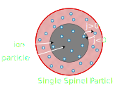

class: dark layout: true <div style="float: right"> </div> --- <div class="center middle" style="position: relative; top: 70px;"> <h1> <div style="width: 80%;margin-left: auto;margin-right: auto;">The Mathematical Pitfalls of</div> <div>the Original Single Particle Model</div> </h1> <p>Willi Zschiebsch<sup>1</sup>, Prof. Dr. Jochen Merker<sup>2</sup>, Prof. Dr. habil. R. Böhm<sup>1</sup></p> <p><sup>1</sup>Department of Engineering<br>University of Applied Sciences Leipzig</p> <p><sup>2</sup>Centre for Mathematics and Natural Sciences<br>University of Applied Sciences Leipzig</p> </div> ??? Dear fellow scholars, my name is Willi Zschiebsch and I am happy to present today our results of our research on of the most fundamental battery model, or to be more specific: Today, I will give an overview of the problems that one of the mostly used battery models inherits and what strategies someone can apply to overcome some of this challenges. --- <div style="position: fixed; top: 50%;left: 50%;transform: translate(-50%,-50%);"> <div style="width: 350px; font-size: 50px;margin-left:auto;margin-right: auto;"> <p style="text-align: center; width: 300px; margin-top: 5px; margin-bottom: 10px;margin-left: auto;margin-right: auto;"><b>Scan me</b></p> </div> </div> ??? Before we start I want to mention, that this presentation can be followed along on your samrtphone. To do this just scan this qr code and you will have access to the full presentation. --- <h1>Structural Batteries</h1> ??? But now lets dive into the world of battery modelling. With the need for better more efficient batteries, the search for alternative battery designs arises. For example the research group I am part of is currently focused on developing a new multifuncrional battery, which utilizes carbon fibres to increase the the mechainal capabilities. But finding an optimal battery can be quite challinging due to the fast amount of possible material combinations and other parameters. So it is not feasable to build every battery and measure the performance. Therfore the need for an digital approach arises to predict suitable material pairings. --- <h1>Single (Spinel) Particle Model</h1> <br> <div style="position: relative;">  <!--Source--> <div class="link-box" style="position: relative; float: right; top: 230px;"> <img height="150" src="./assets/ref_spm.png" style="margin-left: auto;margin-right: auto;display: block; margin-top: 10px"/> <p style="text-align: center;width: 225px; margin-top: 5px; margin-bottom: 10px;font-size: 20px;"><b>DOI:</b> <a href="https://iopscience.iop.org/article/10.1149/1.1393279">10.1149/1.1393279</a></p> </div> ??? The most known battery models are the DFN, SPM, which is a simplification of the former and the fully homogenized model. Most of the them was deveolped during the late 90s , early 2000s and have been improved and enhanced since. But these enhanced models are hard to understand, if someone is not aware of the original model the particular model is advancing. Therefore we decided to start with on of the most fundamentel battery model, the mpdel of charging a single spinel particle under potendiodynamic control --- <h1>Single (Spinel) Particle Model</h1> <br> <br> <div style="width:100%;"> ion transport: $$\frac{\partial c}{\partial t} = \frac{1}{r^2} \frac{\partial}{\partial r} \left( D r^2\frac{\partial c}{\partial r} \right)$$ with BCs: <ul> <li>$0 = \left. \frac{\partial c}{\partial r} \right\rvert_{r=0}$</li> <li>$j = -D \left( \left. \frac{\partial c}{\partial r} \right\rvert_{r=R_p} \right)$</li> </ul> </div> --- <h1>Buttler-Volmer equation</h1> <br> <div style="position: relative;"> <div style="margin: -0.4em;"> $$j = j_0 \left[ \exp \left( \frac{(1-\beta) F \eta}{RT} \right) - \exp \left( -\frac{\beta F \eta}{RT} \right) \right]$$ </div> with: <div style="margin: -0.4em;"> $$j_0 = k (c_l)^{1-\beta} (c_s)^\beta (c_t - c_s)^{1-\beta}$$ </div> <img height="250" src="./assets/spm_with_concentrations.svg" style="position: absolute; right:0px; top: 140px;"/> </div> --- <h1>Buttler-Volmer equation</h1> <br> <div style="position: relative;"> <div style="margin: -0.4em;"> $$j = j_0 \left[ \exp \left( \frac{(1-\beta) F \eta}{RT} \right) - \exp \left( -\frac{\beta F \eta}{RT} \right) \right]$$ </div> with: <div style="margin: -0.4em;"> $$j_0 = k (c_l)^{1-\beta} (c_s)^\beta (c_t - c_s)^{1-\beta}$$ </div> introduce <b><i>state of charge</i></b>: <div style="margin: -0.4em;"> $$y = \frac{c}{c_t}$$ </div> finaly results in: <div style="margin: -0.4em;"> $$j_0 = k c_t (c_l)^{1-\beta} (y_s)^\beta (1 - y_s)^{1-\beta}$$ </div> <img height="250" src="./assets/spm_with_concentrations.svg" style="position: absolute; right:0px; top: 140px;"/> </div> --- <h1>Buttler-Volmer equation</h1> <br> .center[] --- <h1>Buttler-Volmer equation</h1> <br> .center[] <div style="position: absolute;top: 290px;left: 880px;width: 300px;height: 100px;"> <svg viewBox="-10 0 300 100" preserveAspectRatio="xMidYMid slice" role="img"> <g transform="rotate(30 50 50)"> <ellipse cx="50" cy="50" rx="60" ry="30" style="stroke: #52c3ce; fill:none; stroke-width: 0.3em;" /> </g> <text x="0" y="5" style="fill: #52c3ce;"> <tspan x="100" dy=".6em">unexpected!</tspan> </text> </svg> </div> --- <h1>Over Potential</h1> <br> $$ \eta = U\_{app} - U\_{ocp}$$ <br> -- <div style="display: block; position:absolute;width: 100%;left: 0px;top: 170px;"> <svg viewBox="0 0 300 100" preserveAspectRatio="xMidYMid slice" role="img"> <rect x="136" width="18" y="4" height="18" rx="1" style="fill: none; stroke:yellow"/> </svg> </div> -- <div style="display: block; position:absolute;width: 100%;left: 0px;top: 170px;"> <svg viewBox="0 0 300 100" preserveAspectRatio="xMidYMid slice" role="img"> <rect x="163" width="18" y="4" height="18" rx="1" style="fill: none; stroke:red"/> </svg> </div> --- <h1>Open-Circuit Potential</h1> $$ \begin{aligned} U_{ocp}(y_s) &= 4.19829 \newline &+ 0.0565661 \tanh \left(-14.5546 y_s + 8.60942\right)\newline &- 0.0275479 \left[(0.998432 - y_s)^{-0.492465} - 1.90111\right]\newline &- 0.157123 \exp(-0.04738 y_s^8)\newline &+ 0.810239 \exp(-40 y_s + 5.355) \end{aligned} $$ <!--Source--> <div class="link-box" style="position: absolute; float: right; bottom: 30px; left:160px;"> <p style="text-align: center;width: 225px; margin-top: 5px; margin-bottom: 10px;font-size: 20px;"><b>DOI:</b> <a href="https://iopscience.iop.org/article/10.1149/1.1836921">10.1149/1.1836921</a></p> </div> -- <!--Source--> <div class="link-box" style="position: absolute; float: right; bottom: 30px; right:160px;"> <img height="150" src="./assets/ref_spm.png" style="margin-left: auto;margin-right: auto;display: block; margin-top: 10px"/> <p style="text-align: center;width: 225px; margin-top: 5px; margin-bottom: 10px;font-size: 20px;"><b>DOI:</b> <a href="https://iopscience.iop.org/article/10.1149/1.1393279">10.1149/1.1393279</a></p> </div> <div style="display: block; position:absolute;width: 100%;left: 0px;top: 170px;"> <svg viewBox="0 0 300 100" preserveAspectRatio="xMidYMid slice" role="img"> <rect x="129" width="53" y="23" height="13" rx="1" style="fill: none; stroke:red"/> </svg> </div> --- <h1>Open-Circuit Potential</h1> <br> <!--Source--> <div class="link-box" style="position: absolute; float: right; top: 150px; right:60px;"> <img height="150" src="./assets/ref_spm.png" style="margin-left: auto;margin-right: auto;display: block; margin-top: 10px"/> <p style="text-align: center;width: 225px; margin-top: 5px; margin-bottom: 10px;font-size: 20px;"><b>DOI:</b> <a href="https://iopscience.iop.org/article/10.1149/1.1393279">10.1149/1.1393279</a></p> </div> <!--Source--> <div class="link-box" style="position: absolute; float: right; bottom: 80px; right:60px;"> <img height="150" src="./assets/ref_bms.png" style="margin-left: auto;margin-right: auto;display: block; margin-top: 10px"/> <p style="text-align: center;width: 225px; margin-top: 5px; margin-bottom: 10px;font-size: 20px;"><b>ISBN:</b> <a href="https://ieeexplore.ieee.org/document/9100168">9781630810245</a></p> </div> ??? this is a note --- # Results .center.middle[<iframe width="896" height="504" src="https://www.youtube.com/embed/ncqX6xbSbL4?autoplay=1&showinfo=0?loop=1&rel=0" frameborder="0" allowfullscreen controls autoplay></iframe>] --- <h1>Benchmarktests</h1> <br> <!--Source--> <div class="link-box" style="position: absolute; float: right; bottom: 180px; right:60px;"> <p style="text-align: center;width: 225px; margin-top: 5px; margin-bottom: 10px;font-size: 20px;"><a href="https://github.com/willi-z/batmania/blob/master/SPM_Zhang.ipynb">GitHub-Repo</a></p> </div> --- <div class="center middle"> <h1 style="width: 600px; text-align: center; margin-left: auto;margin-right: auto;">Thank you for listening!</h1> <div style="text-align: left;width: 50%;font-size: 30px;margin-left: auto;margin-right: auto;"> <p>This research was sponsored by:</p> <p>on the basis of a resolution<br> of the German Bundestag</p> </div> </div> <!--Source--> <div class="link-box" style="position: absolute; float: left; top: 150px; left:60px;"> <p style="text-align: center;width: 225px; margin-top: 5px; margin-bottom: 10px;font-size: 20px;"><a href="https://github.com/willi-z/batmania/blob/master/SPM_Zhang.ipynb">GitHub-Repo</a></p> </div> <!--Source--> <div class="link-box" style="position: absolute; float: left; bottom: 80px; left:60px;"> <p style="text-align: center;width: 225px; margin-top: 5px; margin-bottom: 10px;font-size: 20px;"><a href="https://www.youtube.com/watch?v=ncqX6xbSbL4">Youtube</a></p> </div> <!--Source--> <div class="link-box" style="position: absolute; float: right; top: 150px; right:60px;"> <p style="text-align: center;width: 225px; margin-top: 5px; margin-bottom: 10px;font-size: 20px;"><a href="https://www.linkedin.com/in/willi-zschiebsch-9bb9181bb">LinkedIn</a></p> </div> <!--Source--> <div class="link-box" style="position: absolute; float: right; bottom: 80px; right:60px;"> <p style="text-align: center;width: 225px; margin-top: 5px; margin-bottom: 10px;font-size: 20px;"><a href="https://orcid.org/0000-0001-5365-3521">ORCiD</a></p> </div>